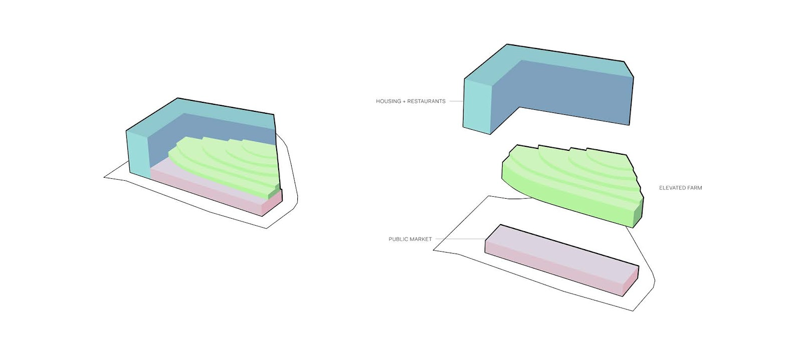

URBN FARM
-in collaboration w/ Victoria Wu & Timothy Thai
We focused on what miniature meant to architecture. In our project, miniature represented a mini-ecosystem. Living, leisure, food, work all housed in one space. Through the miniature, we are able to understand and observe all of these scenes of life at once. URBN FARM is a physical manifestation of the “farm to table” movement. Produce is grown, collected, and consumed all in the middle of the city. Beyond this, farmers are also housed on site, in an area where the average household income is above $150,000. Out project highlights the discrepancies between people who consume these “hipster luxuries” and those who provide them, as well as brings them together.
*Disclaimer: Most vector work taken from Freepik.com. Images by Vivian Nguyen unless stated otherwise.

Initial Research
For our initial research, we first determined what was around the site. We saw that many restaurants are located near the site. To strengethen our “farm to table” concept, we thought it would be great if URBN FARM can be a local supplier to these restaurants. For our site analysis, we also located the local bus transit stops and where most of the noise would be. A shadow study was needed to determine the best location for the elevated farm to get the most sunlight.


Image by Victoria Wu
Through this collage, we wanted to depict the locals and the immediate surroundings of the site.
Shadow Study

Based on our site analysis, we determined that the housing should be located on the north and east sides of the site, while the public market was located on the south.

Final Representation
For our final representation of URBN FARM, we chose to go with vector images with bright colors. It was really fun to play around with the non-traditional/typical way of representing architectural drawings.

Image by Timothy Thai
Image by Timothy Thai